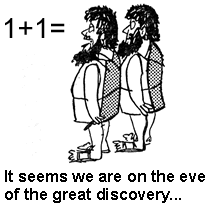

Typesetting of mathematics and computer code
Mathematics
Typesetting of mathematics in a quiz follows a restricted LaTeX syntax. Inline
formulas appear inside dollar signs, while separate equations
appear inside !bt ("begin TeX") and !et ("end TeX") tags.
Simple example
Question:
Compute the result of \( a+b \) in the case \( a=2 \) and \( b=2 \).

Good attempt, especially when referring to the following story.
An anthropologist was asking a primitive tribesman about arithmetic. When the anthropologist asked, What does two and two make? the tribesman replied, Five. Asked to explain, the tribesman said, If I have a rope with two knots, and another rope with two knots, and I join the ropes together, then I have five knots.

Seems trivial, but once upon a time...

Choice C:
The computation does not make sense when \( a \) and \( b \) are given without
units.
It is indeed possible to add pure numbers without any units.
The source code for defining the above quiz reads
!bquiz
Q: Compute the result of $a+b$ in the case $a=2$ and $b=2$.
Cw: 5.
E: Good attempt, especially when referring to the following story.
!bquote
An anthropologist was asking a primitive tribesman about arithmetic.
When the anthropologist asked, *What does two and two make?* the
tribesman replied, *Five.* Asked to explain, the tribesman said, *If I
have a rope with two knots, and another rope with two knots, and I
join the ropes together, then I have five knots.*
!equote
Cr: 4.
E: Seems trivial, but once upon a time...
FIGURE: [fig/1p1, width=180 frac=0.3]
Cw: The computation does not make sense when $a$ and $b$ are given without
units.
E: It is indeed possible to add pure numbers without any units.
!equiz
To make sure blocks with equations come out correctly in different output formats (LaTeX, HTML, Sphinx, Markdown), only four types of standard LaTeX equation environments should be used:
- Single equation without number:
\[ ... \]orequation*environment - Single equation with number:
equationenvironment - Multiple, aligned equations without numbers:
align*environment - Multiple, aligned equations with numbers:
alignenvironment
This means that one has to stay away from eqnarray, alignat,
and other common LaTeX equation environments. However, inside an equation,
standard LaTeX math typesetting works (like \alpha, \mbox{...}, etc.).
A more complicated example
Question:
The equation
$$ \begin{equation} \nabla\cdot\boldsymbol{u} = 0 label{cont:eq} \tag{1} \end{equation} $$is famous in physics. Select the wrong assertion(s):
Choice A:
The equation tells that the net outflow of something with
velocity \( \boldsymbol{u} \) in region is zero.
This is right: integrating (ref{cont:eq}) over an arbitrary domain \( \Omega \) and using Gauss' divergence theorem, we get the surface integral
$$ \int_{\partial\Omega}\boldsymbol{u}\cdot\boldsymbol{n}dS=0,$$where \( \boldsymbol{n} \) is an outward unit normal on the boundary \( \partial\Omega \). The quantity \( \boldsymbol{u}\cdot\boldsymbol{n}dS \) is the outflow of volume per time unit if \( \boldsymbol{u} \) is velocity.
Choice B:
The equation tells that the vector field \( \boldsymbol{u} \) is divergence free.
Yes, divergence free is often used as synonym for zero divergence, and \( \nabla\cdot\boldsymbol{u} \) is the divergence of a vector field \( \boldsymbol{u} \).
Choice C:
The equation implies that there exists a vector potential \( \boldsymbol{A} \)
such that \( \boldsymbol{u}=\nabla\times\boldsymbol{A} \).
Yes, this is an important result in vector calculus that is much used in electromagnetics.
Choice D:
The equation implies \( \nabla\times\boldsymbol{u}=0 \).
No, only if \( \boldsymbol{u}=\nabla\phi \), for some scalar potential \( \phi \), we have \( \nabla\times\boldsymbol{u}=0 \).
Choice E:
The equation implies that \( \boldsymbol{u} \) must be a constant vector field.
No, it is the sum of derivatives of different components of \( \boldsymbol{u} \) that is zero. Only in one dimension, where \( \boldsymbol{u}=u_x\boldsymbol{i} \) and consequently \( \nabla\cdot\boldsymbol{u}=du/dx \), the vector field must be constant.
The corresponding code needed to define this quiz is listed below. Note two new features:
- The
K: gradient; divergence; ...construction allows specification of a set of keywords separated by semi-colon. The feature is handy when automatically selecting quizzes from a large database. There is no output of the keywords in a typeset quiz. -
L: div:assertdefines a label for the quiz. This can be used as a logical name in the same way as labels are used in LaTeX. For example, a collection of labels can be specified for selecting a collection of quizzes. The label is invisible in a typeset quiz.
Keywords and label should appear before or right after the question and they cannot span more than one line.
Now we present the complete code for the quiz above:
!bquiz
Q: The equation
!bt
\begin{equation}
\nabla\cdot\boldsymbol{u} = 0
label{cont:eq}
\end{equation}
!et
is famous in physics. Select the wrong assertion(s):
K: gradient; divergence; curl; vector calculus
L: div:assert
Cw: The equation tells that the net outflow of something with
velocity $\boldsymbol{u}$ in region is zero.
E: This is right: integrating (ref{cont:eq}) over an arbitrary domain
$\Omega$ and using Gauss' divergence theorem, we get the surface integral
!bt
\[ \int_{\partial\Omega}\boldsymbol{u}\cdot\boldsymbol{n}dS=0,\]
!et
where $\boldsymbol{n}$ is an outward unit normal on the boundary $\partial\Omega$.
The quantity $\boldsymbol{u}\cdot\boldsymbol{n}dS$ is the outflow of volume per
time unit if $\boldsymbol{u}$ is velocity.
Cw: The equation tells that the vector field $\boldsymbol{u}$ is divergence free.
E: Yes, *divergence free* is often used as synonym for *zero divergence*,
and $\nabla\cdot\boldsymbol{u}$ is the divergence of a vector field $\boldsymbol{u}$.
Cw: The equation implies that there exists a vector potential $\boldsymbol{A}$
such that $\boldsymbol{u}=\nabla\times\boldsymbol{A}$.
E: Yes, this is an important result in vector calculus that is much
used in electromagnetics.
Cr: The equation implies $\nabla\times\boldsymbol{u}=0$.
E: No, only if $\boldsymbol{u}=\nabla\phi$, for some scalar potential $\phi$,
we have $\nabla\times\boldsymbol{u}=0$.
Cr: The equation implies that $\boldsymbol{u}$ must be a constant vector field.
E: No, it is the *sum* of derivatives of different components of $\boldsymbol{u}$
that is zero. Only in one dimension, where $\boldsymbol{u}=u_x\boldsymbol{i}$
and consequently $\nabla\cdot\boldsymbol{u}=du/dx$, the vector field must be constant.
!equiz
Computer code
Inline computer code (variables, expressions, statements) are
normally typeset with a monospace font, and this is enabled by
enclosing the code in backticks. Blocks of computer code are typeset
with !bc ("begin code") and !ec ("end code") tags.
One can specify the computer language as part of the !bc tag:
!bc LX, where L is the language (py for Python, m for Matlab,
cpp for C++, for instance) and X can be pro for a complete
executable program or cod for a code snippet (cannot be executed without
additional statements) . The quizzes below demonstrate the syntax.
1: X can also be hide for code that is not supposed to be
shown, but possibly required to execute other snippets in an
interactive document (that allows code to be edited and executed
by the reader). This is currently being implemented in DocOnce's
support for Runestone Interactive books (using the Sphinx format).
Question:
We want to create a Python list object of length n where each
element is 0. Is the following code then what we need?
import numpy
mylist = numpy.zeros(n)
Not exactly: numpy.zeros creates an array of zeros, not a list.
Choice B:
Yes, provided we write np instead of numpy:import numpy as np
mylist = np.zeros(n)
No, this is fully equivalent to the original code, so mylist becomes
an array, not a list.
One would need to do mylist = [0]*n or numpy.zeros(n).tolist().
!bquiz
Q: We want to create a Python list object of length `n` where each
element is `0`. Is the following code then what we need?
!bc pycod
import numpy
mylist = numpy.zeros(n)
!ec
K: list, array
Cw: Yes.
E: Not exactly: `numpy.zeros` creates an array of zeros, not a list.
Cw: Yes, provided we write `np` instead of `numpy`:
!bc pycod
import numpy as np
mylist = np.zeros(n)
!ec
E: No, this is fully equivalent to the original code, so `mylist` becomes
an array, not a list.
Cr: No.
E: One would need to do `mylist = [0]*n` or `numpy.zeros(n).tolist()`.
!equiz
- Each quiz is enclosed in
!bquizand!equiz -
Q: question -
Q [prefix]: question with prefix (defaults to Question) -
Cr: right (correct) choice -
Cw: wrong (incorrect) choice -
Cr [prefix]: right (correct) choice with prefix (defaults to Choice X, where X is an upper case letter) -
Cw [prefix]: wrong (incorrect) choice with prefix -
E: explanation of last choice -
K: keywords -
L: label (logical name) -
NP: heading for new page -
H: quiz heading
Example: Putting it all together
Question:
from math import sin
def D(u, t, dt=1E-5):
return (u(t + dt) - u(t - dt))/(2*dt)
def u(t):
"A quadratic function."
return t^2
print D(u, t=4),
print D(lambda x: return 2*x, 2)
The purpose of the above program is to differentiate the two mathematical functions
$$ \begin{align*} u(t) &= t^2,\\ f(x) &= 2x. \end{align*} $$Determine which of the following assertions is wrong.
Choice A:
In Python, the syntax for \( t^2 \) is t**2, not t^2, so the
u function contains an error.
True. However, t^2 will work for integer t in Python,
but the computation is nonsense in this case since \( u(t) \) is
supposed to be \( t^2 \).
Choice B:
The string in the u function is a valid doc string.
Yes, a doc string can be any string after the function heading. It can
have single quotes '...', double quotes "...",
triple single quotes '''...''', or triple double quotes """...""".
The latter is the most popular for doc strings. Recall that triple quotes
allow the string to span multiple lines.
Choice C:
The output from the program is on a single line, despite two print
statements.
Yes, because of the comma after the first print statement: it suppresses
the newline character that is normally appended to print statements in
Python.
Choice D:
One cannot use u both inside the D function and in the
outer calling code (the main program).
Yes, you can, because the u argument in the D function (holding
a function) is a local variable inside the D function. The u in
the calling code is global variable, holding a function object.
Inside D, u refers to the local variable, while in the main
program, u refers to the global variable, and the local variable u
in D no longer exists, because it was deleted when returning from
the function. Inside D, we can actually access the global u by
globals()['u'], but that almost never comes to use and is also bad
coding.
Choice E:
The call and then calling D(lambda x: return 2*x, 2) is equivalent to definingdef f(x):
return 2*x
D(f, 2).
f(x) is defined as a lambda function, which is a short-hand for
defining functions as an expression, in a function call as here, or
in the right-hand side of an assignment, e.g.
f = lambda x: return 2*x
Choice F:
There is danger of integer division in the D function.
True, here is an example: D(lambda t: t, dt=1). We get
(t+1 - t-1)/(2*1), which for any integer t gives int/int
and hence integer division.
Choice G:
The D function computes an approximate derivative of the
function u(t).
Yes, D applies a widely used finite difference approximation
formula to the derivative.
Choice H:
Both calls to D result in the exact derivative, provided we
replace t^2 by t**2.
Yes, the finite difference approximation used in D is exact
for quadratic polynomials!